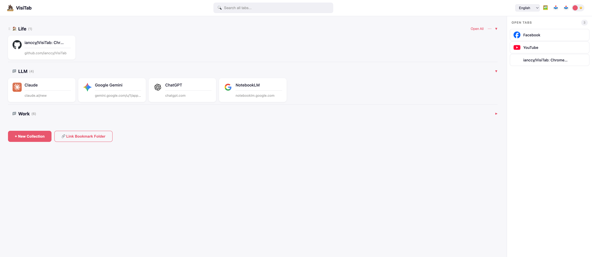

A Chrome extension that turns your new tab into a powerful visual workspace. Local bookmarks, Google Drive sync, and linked bookmark folders — all in one page.

Local bookmarks, cloud storage, linked folders — all unified in your new tab page.
Your collections are stored as Chrome bookmarks — no proprietary format, no lock-in. Even without signing in, everything is saved and accessible from Chrome's built-in bookmark manager.
Sign in with Google to sync collections across devices. Data is stored as a JSON file in your own Google Drive — no third-party servers, no subscription. You own your data, always.
Already have bookmark folders organized your way? Link them directly as live collections. Edits sync both ways — no migration needed, no duplication. Your bookmarks become visual and manageable.
Use all three methods together. Keep some collections local, sync others to the cloud, and link existing bookmark folders — all visible side by side on the same page. No other tab manager gives you this flexibility.
Everything you need to keep your browser organized.
Group tabs into named collections with custom colors and emoji icons. Collapse or expand groups to keep your workspace tidy. One click to open all tabs in a collection.
Drag open tabs from the sidebar into any collection. Reorder collections and tabs freely. Move tabs between collections with a simple drag.
Sign in with Google to sync collections across devices. Data is stored as a file in your own Google Drive. Switch between accounts with automatic draft handling.
Turn any Chrome bookmark folder into a live collection. Changes flow both ways — edit in TabZ or in Chrome's bookmark manager, both stay in sync.
Dark and light themes. Custom background colors or images. Choose from 32 collection colors and 19 emoji icons to make your workspace truly yours.
Search across all collections and open tabs instantly. Import and export as JSON for backup. Export any collection as a Chrome bookmark folder.
Save the current tab to any collection from the extension popup — without leaving the page you're on. One click, done.
Unsaved collections stay as local drafts. Sign in to Google and choose which to upload — nothing syncs until you say so.
See all open browser tabs in a real-time sidebar. Close tabs, drag them into collections, or click to switch — all from your new tab page.